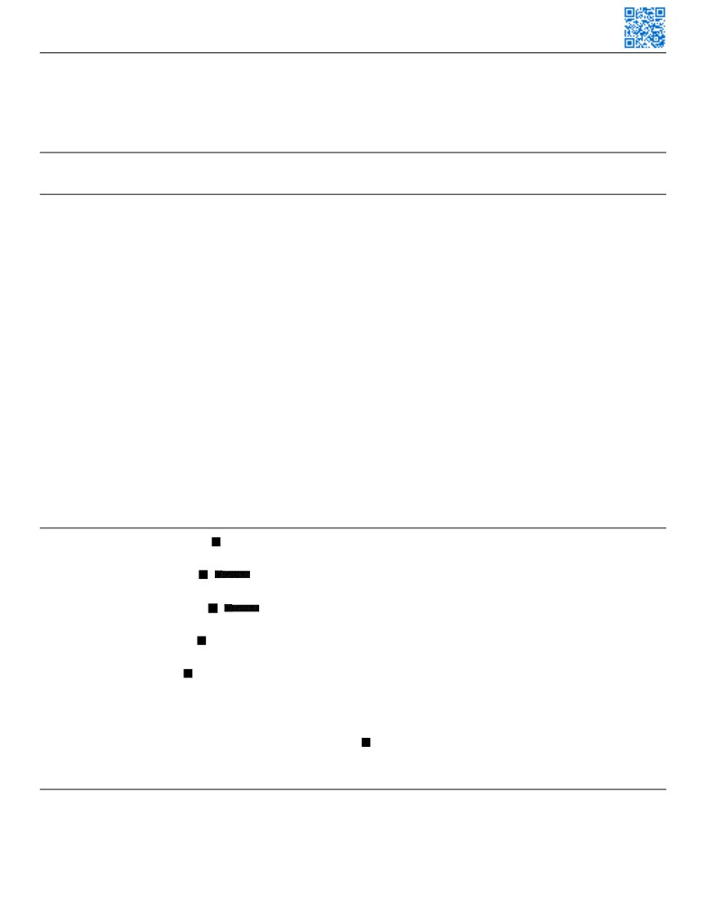

CLINT K. MORRIS
EDUCATION
University of Georgia - Athens, GA
January 2020- December 2021
Masters of Science in Engineering
Cumulative GPA: 4.00/4.00
Kennesaw State University - Marietta, GA
January 2015 - July 2019
Bachelors of Science in Mechanical Engineering
Cumulative GPA: 4.00/4.00
RELEVANT PROJECT EXPERIENCE
RELEVANT EXPERIENCE
Georgia Tech Research Institute.
University of Georgia College of Engineering.
Research/Algorithms Engineer
June 2021 - September 2021
Research Assistant
January 2020 - December 2021
• Developed advanced missile warning systems.
• Member of the Smart Mobility and Infrastructure
• Integrated various data sources (Light Detection and
Laboratory at the University of Georgia.
Ranging LIDAR, synthetic aperture radar SAR, Electro-
• First authored five machine learning journal publications,
optical) for object classification and tracking.
two additional publications are currently under review.
• Executed algorithm tests, designed and/or modified
• Focused on engineering, data science, machine
algorithm architecture and contributed to technical reports.
learning/deep learning, computer vision, edge/cloud
Tesla, Inc.
computing, sensor networks, remote sensing, to tackle
Data Science Internship
August 2021 - December 2021
today’s mobility and infrastructure challenges.
• Worked within the Charging and Data Modeling Team.
WEG Electric Corp.
• Developed a multi-model causal inference pipeline to
Project Manager
July 2019 - December 2019
optimize Supercharger placement by recommending the
most efficacious locations for future sites.
• Automated SAP order entry through the implementation of
Web-drivers and Scrapers (Selenium, bs4, lxml, Scrapy).
• Developed long-term forecasting models to predict
• Created software to aid order management and progress
supercharger power usage. This model also
captured the effect additional neighboring supercharger
tracking, by reading PDFs/Images and automatically
sites impose on the usage forecasts.
creating Gantt charts and email reminders.
Georgia Tech Research Institute.
Research Assistant
June 2021 - September 2021
• Member of the Electro-Optical Systems Laboratory within
the Electronic Warfare Modeling and Analysis Division.
• Responsible for investigating and applying novel machine
learning.
PUBLICATIONS
Machine Learning with Applications
Morris C. and Yang J. (2021). A Machine Learning Model Pipeline for Detecting Wet Pavement Condition from Live Scenes of Traffic Cameras. MLWA-
D-20-00413.
Accident Analysis and Prevention
Morris C. and Yang J. (2022). Enabling Risk-Aware Routing: Harnessing Feature-Rich Big Data for High-Resolution Crash Risk Modeling Using Tree
Ensemble. (Under Review).
Transportation Engineering, Part A
Morris C., Yang J., Durham S., Kim S., and Chorzepa M., (2021). Self-Supervised Deep Learning Framework for Anomaly Detection in Traffic Data 2020,
TEENG-7025R2
Accident Analysis and Prevention
Morris C. and Yang J. (2021). Effectiveness of Resampling Methods in Coping with Imbalanced Crash Data: Crash Type Analysis and Pred ictive Modeling
AAAP-D-20-00487.
MDPI Infrastructures Journal
Morris C. and Yang J. (2020). Understanding Multi-Vehicle Collision Patterns on Freeways—512 A Machine Learning Approach. Infrastructures 2020,
5(8), 62; https://doi.org/10.3390/infrastructures5080062.
Transportation Research Board
Ma S., Yang J. Chorzepa M., Morris C., Kim S., and. Durham S. (2021). A Composite Deep Learning Architecture for Vehicle Classification - Combining
Vision Transformers with Wheel Detectors. TRBAM-22-02023.
ASME International Mechanical Engineering Congress and Exposition
Salman, M. Ge, C. Morris, C. (2019). Spatial Variations in Achilles Tendon Shear Wave Speed Using a Cost-effective Method of Accelerometers.
Proceedings of the ASME 2019 International Mechanical Engineering Congress and Exposition IMECE2019, IMECE2019 -11001.
TECHNICAL PROFICIENCIES
Platforms, Software and Languages:
Database (SQL Redshift, MySQL, Postgres, NoSQL)
Disciplines and Expertise
Operating Systems: (Linux, Mac IOS, Windows)
Utilities: (Apache Hadoop, Quoble, Hive, Apache Spark,
Machine Learning
languages: (Python, R, C++, HTML+CSS, Scala)
Dask)
Deep Learning
Python: (NumPy, Pandas, Scikit-learn,
Git
Statistical Modeling
Keras, Flask, Torch)
Cloud platforms (AWS Google Cloud)
Data Mining